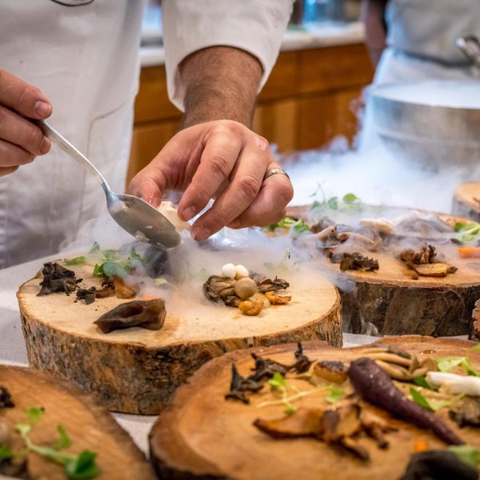

The house
A grocer's counter, and a kitchen behind it
Juniper has been on Cadell Street since 1931, when it opened as a greengrocer. We kept the counter, the brass rail and the cold room, took out the shelving, and turned the rest of the shop into a dining room of twenty-eight seats.
Nell Farmer writes the menu on the back of the morning delivery note. If the fish is not good enough that day it does not go on the board. Priya Raman buys the wine from eleven growers, four of them organic, and keeps thirty bottles open at any one time.
The room is candle-lit and plain: bentwood chairs, paper menus, no music before seven. On Sundays we cook one long lunch and let it run until the bread is gone.